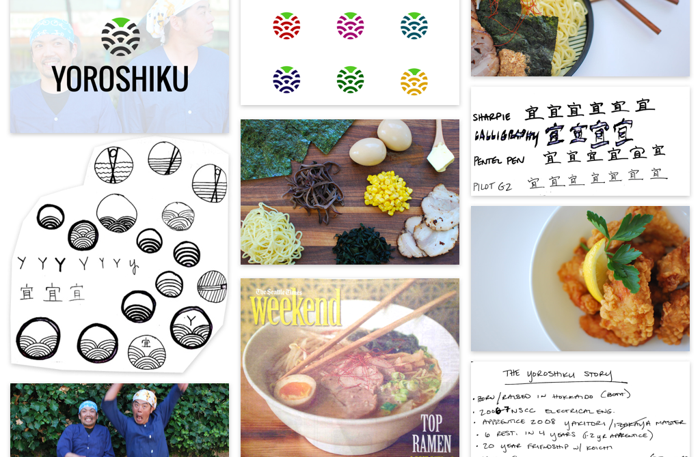
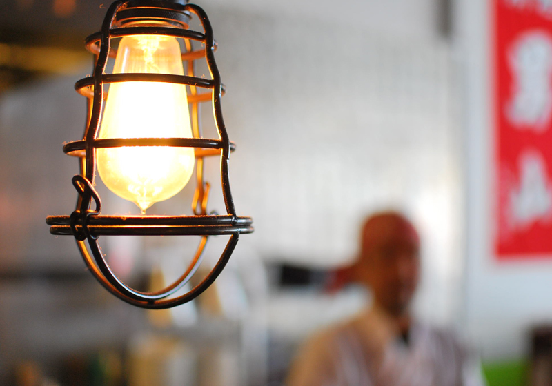

Yoroshiku
Design, Photography, Frontend Web Development

Foreword
This was written in 2014 as I was just starting out in my design career. I didn't have much work to show at the time and wanted to make the most out of this simple web project. I shot all of the photography, designed the site, and wrote the code from scratch. Years later, I'm still proud of the work I did, and get a kick out of reading such a detailed case study on what I would now consider a quick weekend project.
The Beginning
I was approached by restaurant owner and friend, Kay Keisuke, about redesigning his website. Another neighborhood favorite of mine, I was thrilled to be a part of the big changes happening at Yoroshiku. This was a fun yet challenging project that allowed me to take my design practice to the next level.
To get started, I met with the owner to discuss his goals for the new site and what wasn’t working up to this point:
- confusing restaurant name
- new product photography
- simple–he loved the site I made for Fainting Goat and wanted a similar feel.
- new logo
Originally called 4649 Japanese Restaurant, the name was a play on words. When read out loud in Japanese, 4-6-4-9 sounded similar to Yo-ro-shi-ku, which means pleased to meet you. I explained to him that using this name was confusing for a few reasons:
- the number sequence is hard to remember if you’ve only been once
- it can be mistaken for the address (which it is not), as in my personal experience
- most Americans won’t understand the play on words
The word Yoroshiku was also incorporated into the name at times, sometimes reading as Yoroshiku 4649 Japanese Restaurant. The lack of consistency across their branding and web presence made it confusing for customers, which is no good for business.

We talked about his vision for the restaurant and inspirations such as Momofuku, Mkt., Joule, and the traditional izakaya (Japanese bar). With the restaurant being known for their classic ramen bowls, in addition to their impending liquor license, we decided on simply Yoroshiku and specifying ramen + modern izakaya in certain contexts.
Next, I set up a few different times to photograph everything from the food, the space, the owner and head chef, and the kitchen staff. The entire process was so much fun that it never felt like work.



As far as the food went, I thought it would make sense to only photograph items that were permanently on the menu. This would avoid the problem of having outdated photos on the site after I completed the project, as well as having to photograph all new recipes in the same style as I did.
Their previous web presence was an outdated Wordpress site that was wordy, repetitive, and sometimes confusing. The food photography wasn’t bad, but the photos were of recipes that were no longer on the menu.


Next, I started sketching ideas for the layout. I considered using a fixed, left-aligned navigation...

...but once I mocked it up and saw it in the browser, it didn’t quite feel right. It took valuable space away from the rest of the content, and my eyes didn’t naturally fall to the left, but rather jumped around the page. I realized this would take visitors longer to find what they were looking for, so I went back to the drawing board.

As I learned from designing the Fainting Goat site, having repeatable components was not only helpful for updating content, but easy on the eyes. I’m a big fan of letting imagery speak for itself, so I decided to incorporate full-width background images on the homepage and menu sections.
For the general layout, we decided on a top-level navigation of Home, About, Menu, Contact. I made sure to make selected states bold as well as green so color blind readers could tell which item was selected.
Within the Menu page, a sub-navigation with Lunch, Dinner, Drink, and Happy Hour menus is displayed below the main nav.
I gave the sub-navigation the same attention as the main, showing a selected state for each list item. The selected item was given a darker state to differentiate from others, yet I didn’t see the need to make them bold as well. The main nav involved a neon color difference instead of a black and white one, which is why I made sure to cover both bases in the main nav.
For the About section, I sat with Kay over tea to get a more detailed account of what led him to Yoroshiku. My goal was to dive deeper than the average bio, making the reader feel as warm as I do when I walk into the restaurant.

I wanted to showcase the incredible efforts Kay has made to turn his dream into a reality, but also giving the bio room to breathe.
I wanted visitors to feel like they are in control by allowing them to quickly recover from errors and easily reverse actions. I did this by providing:
- persistent navigation to the home page by clicking the logo
- smooth scrolling between sections when a nav item is selected
- exact navigation 404 page, leading back to relevant spots on main site

The owner wanted to have a consistent logo on the website, business cards, menus, and outdoor sign. He wasn’t attached to the one they already had, and I wasn’t particularly crazy about it. The negative space in the old logo reminded me of a saw blade or beetle, and the kanji character felt too rigid.

It wasn’t terrible, but there was definitely room for improvement. I had never designed a logo before, but I offered to give it a shot since it would be a reflection of my work, too.
I originally started sketching with pen and paper. The traditional Japanese seigaiha wave has always been a favorite of mine, and I kept getting drawn back to it. I also had the owner draw the symbol for Yoroshiku, meaning "pleased to meet you", in different pen and marker weights.

I photographed some inspiration for the chopstick sketches to give myself more to work with.
Wanting to refine the ideas I had so far, I moved to building them in Sketch.
I felt like the chopstick thing was overplayed in Japanese cuisine, and I was still being drawn to the traditional wave pattern. I really dug the idea of the negative space spilling into the background, so I explored the idea a bit more.

I loved the symmetry of the first idea, so I played with some color options. The restaurant uses a bright green undertone in their branding, so I tried to incorporate that tastefully.

Most of these were either too loud, too dark, or looked like a WiFi icon. I was drawn to the first idea with just a splash of green, with a black contrast. The two colors together felt harsh on the eyes, so I tried some other options.

None of the other color combinations felt right, and I was still into the black and green. By darkening the green and choosing a lighter black, the contrast became much more pleasant.

Lastly, I brought in a friend for dinner who writes for the Seattle Times. When it came time to write the next food “round-up”, Yoroshiku was featured along with five other ramen joints in the Seattle area.
Deployment
When it came time to launch the site, I had the owner purchase the domain through Namecheap. Having already gone through the deployment process with Fainting Goat, this time around was a bit smoother.

The old Wordpress site was deleted, I made sure everything was committed to GitHub, and all files were uploaded onto S3. After about an hour, the site appeared online and everything worked like a charm.
Conclusion
Through this experience I learned:
- designing a logo can be a long and tedious process, but the result is worth it
- accessibility is just as important in design as it is in development
- make it easy for users to recover from their mistakes–in both single and multiple page sites
- treat sub-navigations with as much importance as the main nav, no matter how many levels deep it might be